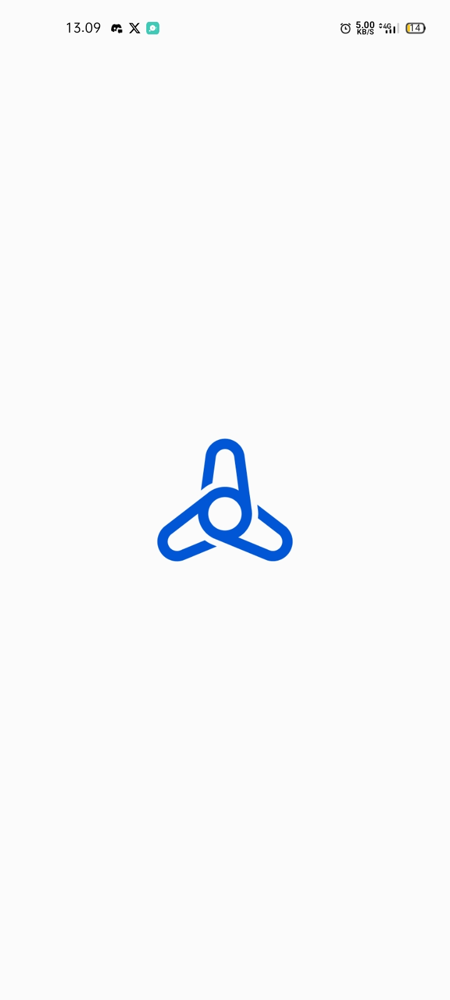
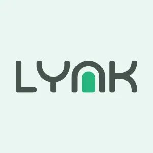
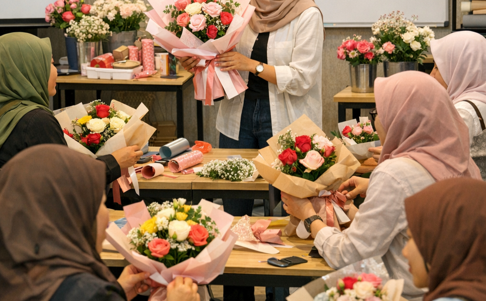
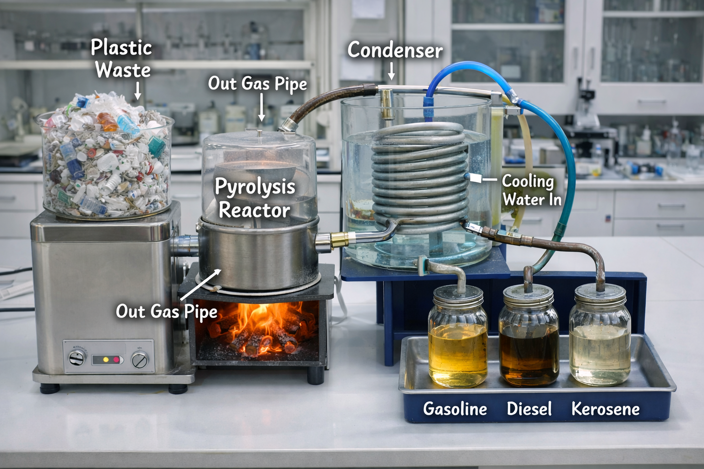

Skripsi
PENGARUH TRANSFORMASI DIGITAL, TEKANAN KOMPETITIF, KEUNGGULAN RELATIF, DAN IKLIM INOVASI TERHADAP KEBERLANJUTAN UMKM SERTA DUKUNGAN PEMERINTAH SEBAGAI VARIABEL MODERASI
29 Agustus 2025, 10.15

Assisting clients in managing administrative tasks and data efficiently through organized work systems, with a focus on accuracy, consistency, and delivering information that is ready for decision-making.
→
Managing digital product sales and marketing from a strategic, distribution, and conversion optimization perspective using digital platforms to increase visibility and revenue.
→
Enhance the skills of MSME actors and aspiring creative entrepreneurs in producing handmade bouquets with strong market value and competitiveness. This program integrates technical training and basic entrepreneurship to encourage the development of sustainable creative businesses.
→
This project converts plastic waste into alternative liquid fuel using a distillation process. By applying controlled heat, plastic polymers are broken down into hydrocarbon fuels, offering a practical solution for waste reduction and sustainable energy production.
→